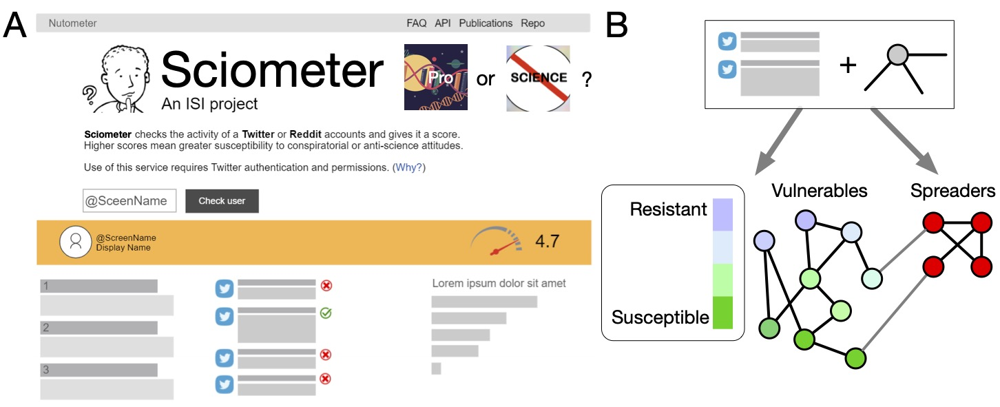
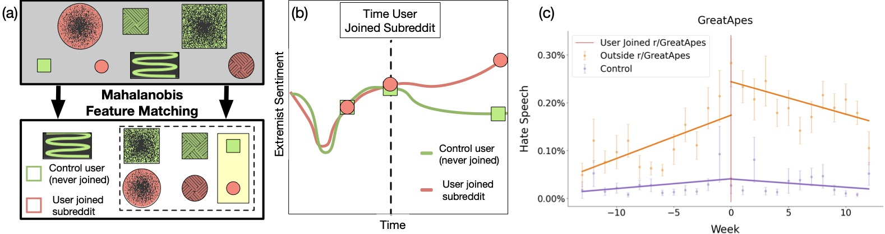
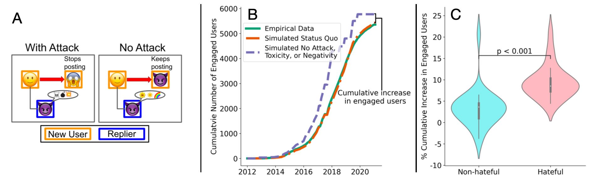

Identifying Populations Susceptible to Anti-Science

Goal: Anti-science attitudes are present within a large and recently active minority. We will build a system that can identify anti-science spreaders and provide an anti-science \textbf{vulnerability score} for each queried account, as shown in the top of the page, which we called Sciometer. In panel A, we show an example of the website, where any user's vulnerability score can easily be determined, and the features that lead to this score can be explained below it. Explaining each prediction with common sense terms and features avoids many drawbacks from treating these scores as black boxes, in which any erroneous prediction is not understood nor easily corrected. In panel B, we show the basic methodology: we will use text, such as user posts and tweets, along with the social network, i.e., who users interact with, to determine user vulnerability.
What we accomplished:
AVAXTAR
We developed three papers that built on each other to understand the spread of anti-science and then more generally extremist behavior:
- We focused our study on vaccine hesitancy, a component in modern-day anti-science discussions. We then developed an open source tool, AVAXTAR to predict who will be anti-vaccine on social media. Our analysis uncovered a range of differences between anti-vaccine and regular users, such as more negative sentiment in anti-vaccine users: Normal user's tweet: As first runner-up to my esteemed @StarTrek colleague @levarburton [when we appeared on #TheWeakestLink ], I would be honored to try my hand as #Jeopardy guest host. My experience as a science presenter for @exploreplanets emboldens me to #boldlygo ! Anti-vaccine user's tweet: Even with the inflated (for scaremongering purposes I can only assume) figure of 126k people who died WITH (not OF remember) covid19, that would mean that in a whole year this ”killer virus” hasnt even managed to kill 0.19% of almost 68 million people in the UK. ”pandemic”
Moreover, anti-vaccine users could be predicted with high accuracy a year in advance, in part because of their frequent use of conspiratorial language.
We discuss the paper we wrote about AVAXTAR, "Detecting Anti-Vaccine Users on Twitter," in more detail here.
Quantifying How Hateful Communities Radicalize Online Users
Another component of extremism is hate speech. We therefore wanted to explore what causes users to become hateful in online social media
We explore how users change their hate speech usage before and after joining a hateful subreddit (a type of forum) on Reddit.com. We match users who joined a hateful subreddit with similar users who did not join using Mahalinobis distance (left panel, below) and compared both cohorts behavior before and after the matched users joined hateful subreddits (middle panel, below). We found that soon after joining, users dramatically increased their frequency of hate speech on average, and this hate speech leaked from hateful to non-hateful subreddits (an example is seen in the bottom right panel). The effect lasted for several months. This research was accepted as a full paper in ICWSM 2023, and is discussed in more detail here.

No Love Among Haters
A final component of extremism we wanted to understand is why people stay hateful. We assumed that users join friendly like-minded friends and remained hateful through comradery. Instead, we find that hate subreddits are more toxic than non-hate subreddits and attach other users far more frequently. This in turn drives new users away, a finding we quantify with a simulation of the frequency users continue to post if they posted nicer messages (bottom left panel) and show this accounts for a drop of roughly 10% of users (bottom middle and right panels). Non-hate subreddits have a much smaller drop, if any.
